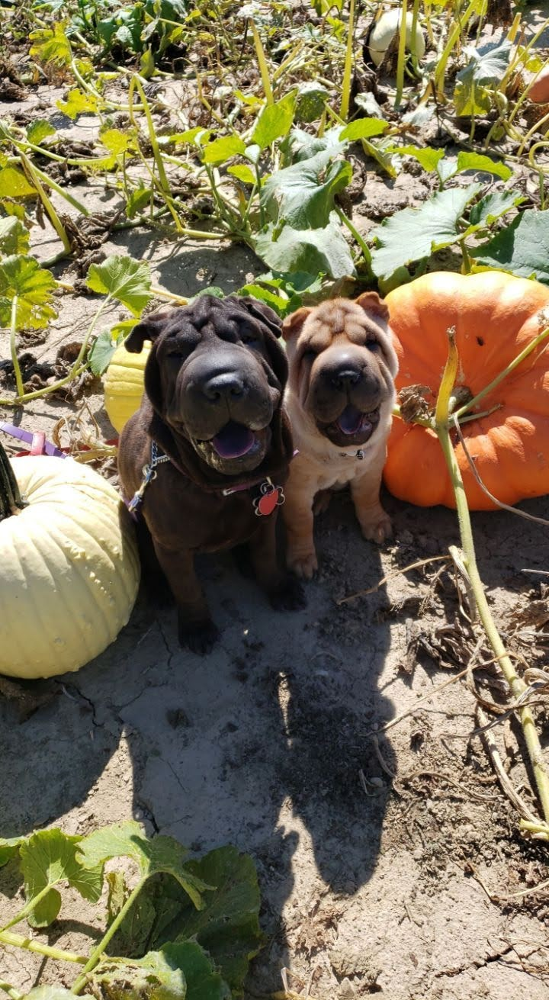

Since we adopted her, Daisy has been an only dog. While she has a lot of fun running figure-8's in the backyard and going on long walks, I felt she still needed other dog friends.
So a few months ago, I researched nearby dog parks. Luckily, I found a free dog park a short drive away! Daisy will get a nice car ride there and back and meet other pups at the park!
I didn't know how she would react to other dogs, so our first visit I was very cautious. She is nervous around strangers, but her reaction is to just hide behind her humans. When she sees other dogs on our walks she tries her hardest to get close to sniff them but she's never barked or been aggressive.
Reasssured by previous experiences, we went to the dog park with dog treats, water, and her favorite toy at the ready. At first, she was very shy. She stayed by my side, and just sniffed the other dogs. If I ran, she ran right by my side. I didn't want to give up on the dog park as I wanted her to socialize more. On her third visit she was finally more comfortable at the park and loved playing with the bigger dogs. She earned the nickname "kangaroo" for her ability to jump a good 5-6ft vertical.
Daisy started to really enjoy the dog park, and so her friends (my boyfriend's dogs), Sedona and Luna, started to join her as well! They follow Daisy's lead through the park and play together at the tennis courts every week too.
